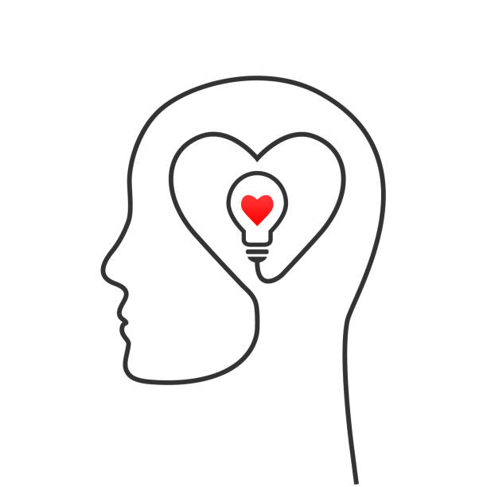
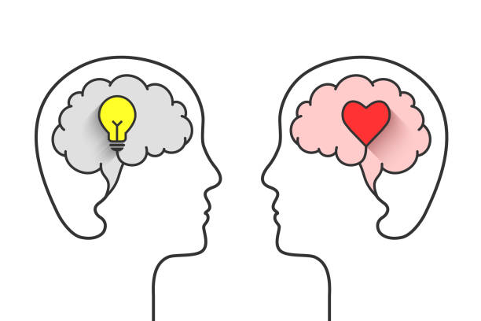
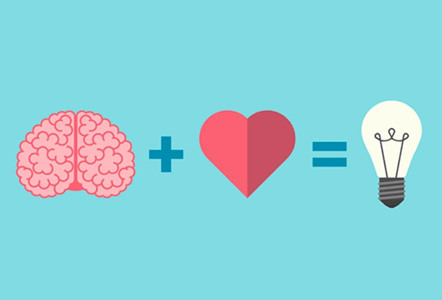
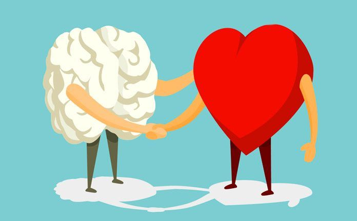

El bienestar emocional se refiere al equilibrio y satisfaccion en las emociones y sentimientos de una persona.Implica tener un manejo saludable de las emociones , la capacidad de enfrentar el estrés y los desafios de la vida, asi como cultivar relaciones positivas.Para lograrlo , es importante identificar nuestras emociones , dormir bien y dedicar momentos para nosotros mismos
La importancia del bienestar emocional en la vida cotidiana es fundamental.Un buen estado emocional no solo contribuye a la felicidad personal, sino que tambien afecta la toma de decisiones, las relaciones interpersonales, el rendimiento académico o laboral y la salud física. Las personas con un alto nivel de bienestar emocional tienden a ser mas flexibles ante los desafíos, tienen una mayor capacidad para adaptarse a situaciones dificiles y mantienen relaciones mas saludables.
Cuidar el bienestar emocional implica prestar atención a las propias emociones, buscar apoyo cuando sea necesario, cultivar hábitos saludables, practicar la autoaceptacion y desarrollar habilidades para manejar el estrés
Características del bienestar emocional:
- Tener una actitud positiva y realista.
- Aceptar tanto las emociones agradables como las difíciles.
- Vivir con propósito, gratitud y autoconciencia.

Beneficios:
- Mejora el sistema inmunológico.
- Incrementa la motivación.
- Fomenta relaciones sanas.
Factores clave del bienestar emocional:
| AUTOCONCIENCIA | Entender tus emociones y pensamientos |  |
|---|---|---|
| AUTORREGULACIÓN | Manejar el estrés, la ansiedad y la ira |  |
| EMPATIA | Conectarse con los demás y entender sus emociones |  |
| RELACIONES SALUDABLES | Mantener vinculos positivos y de apoyo |  |